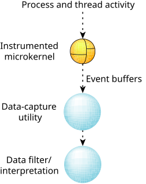

Here are the essential tasks involved in kernel instrumentation:
- The instrumented microkernel
emits trace events as a result of various system activities.
These events are automatically copied to a set of buffers
grouped into a circular linked list.
- As soon as the number of events inside a buffer reaches
the high-water mark, the kernel notifies a data-capture utility.
- The data-capture utility then writes the trace events
from the buffer to an output device (e.g., a serial port, an
event file, etc.).
- A data-interpretation facility then interprets the
events and presents this data to the user.
Figure 1. Instrumentation at a glance.
